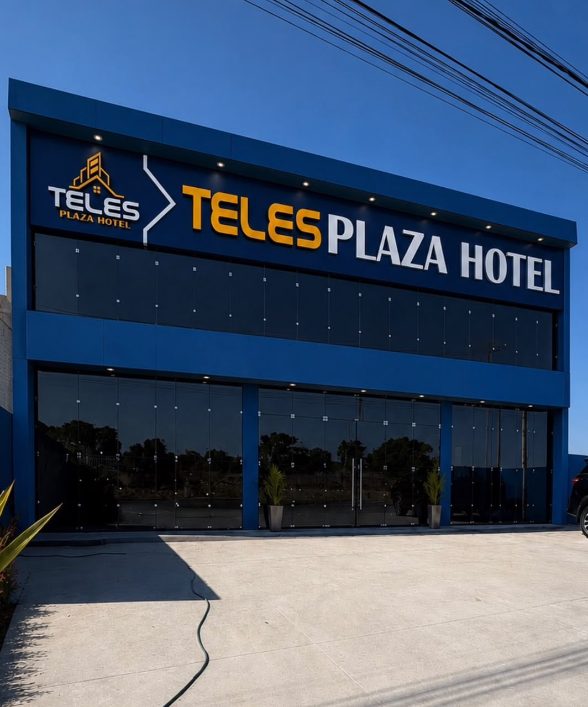
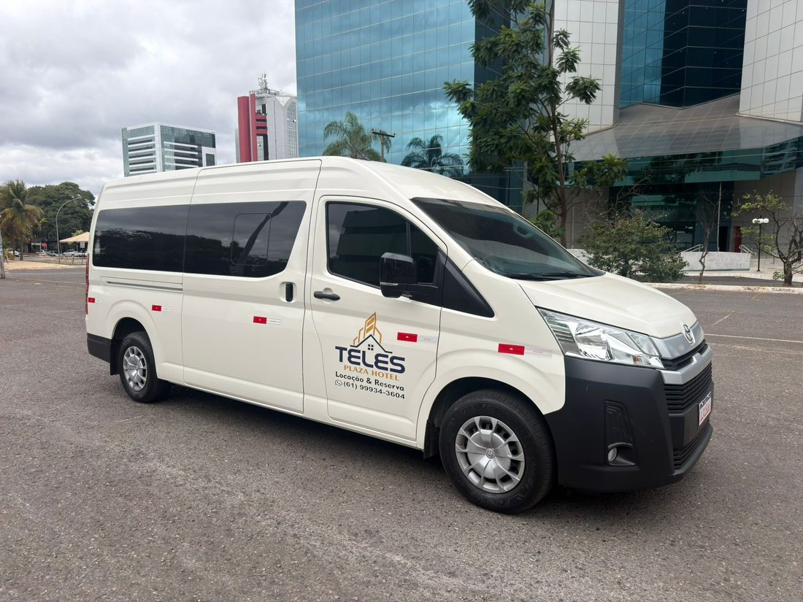

PARA DESCANSAR A DOIS
Quarto de casal
Depois de um dia cheio, um lugar tranquilo para fazer uma pausa e aproveitar a sua estadia.
Cama de casalAr-condicionadoTV e Wi-Fi
Atendimento direto com o hotel. Nossa equipe confirma a disponibilidade e os valores.
BEM-VINDO AO TELES PLAZA
Uma boa noite de sono.
Um novo dia com mais disposição.
Em Águas Lindas de Goiás, encontre o conforto para descansar e a praticidade para seguir viagem — a trabalho, em família ou por alguns dias a mais.
Encontre sua acomodação
ACOMODAÇÕES
Ambientes bem cuidados, camas confortáveis e o essencial para você se sentir à vontade desde a chegada.
PARA DESCANSAR A DOIS
Depois de um dia cheio, um lugar tranquilo para fazer uma pausa e aproveitar a sua estadia.
COMPANHIA COM CONFORTO
Duas camas, o mesmo cuidado. Uma opção prática para colegas de trabalho, amigos e familiares.
Vai viajar sozinho ou precisa acomodar um grupo?
EMPRESAS & GRUPOS
Hospedagem para equipes, alimentação e transporte podem fazer parte do mesmo orçamento. Conte o que seu grupo precisa e receba uma proposta para o período da viagem.
Solicitar proposta para grupo
DO TRAJETO À HOSPEDAGEM
Traslado de aeroporto, deslocamento de equipes e locação de van executiva com motorista. Organize os trajetos do seu grupo em Brasília, Águas Lindas e região.
Consulte rotas, horários, disponibilidade e valores com a equipe.
Planejar meu transporteFÁCIL DE ENCONTRAR
Em frente à BR-070, uma localização prática para quem chega à cidade ou segue viagem pelo Entorno de Brasília.
Quadra 02, Lote 24SUA PRÓXIMA ESTADIA
Conte as datas. A gente ajuda com o restante.